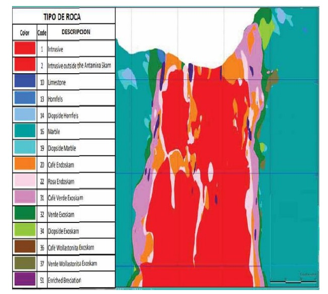

GEOLOGIA
El yacimiento se ubica en el distrito de San Marcos, provincia de Huari, departamento de Áncash
a una altitud aproximada de 4300 msnm. Se localiza en la cadena de los Andes, ubicada en la cordillera blanca,
se ubica en la formación Jumasha hasta la formación Celendín.
El yacimiento se dio en rocas carbonatadas que producen que la zona sea de tipo skarn.
También encontramos minerales de Mena: Galena, bornita, molbidenita, entre otros.
Y minerales de Ganga: Pirita, calcitas, magnetitas, entre otros.

CATEO
Es la tarea de buscar indicios mineralógicos en una zona por explorar. Este trabajo
se realiza en la superficie del terreno a investigar.
PROSPECCIÓN
Vienen a ser los valores anómalos presentes en la zona explorada. Tenemos la anomalía geofísica (perfil del yacimiento)
y la anomalía geoquímica (estudios de elementos presentes en el yacimiento) los cuales se dan a profundidad del
terreno a investigar.
VALORES GEOFISICOS
VALORES GEOQUIMICAS